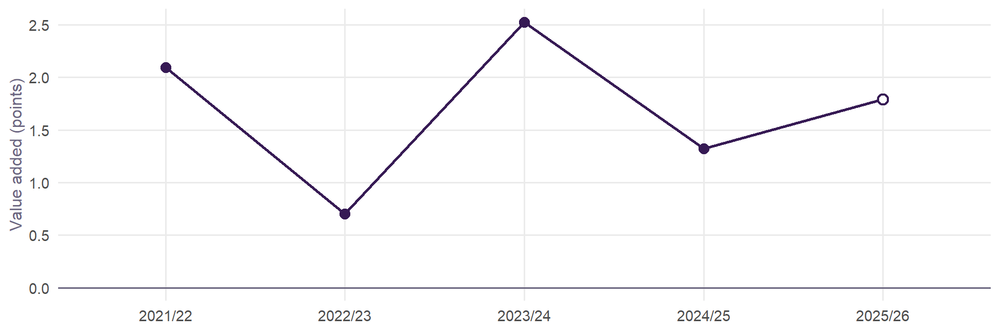

| Group | v2.0 effect | v2.0 rank | Without absence | Rank without absence |
|---|---|---|---|---|
| All pupils | +3.9% | 4 of 152 | +0.8% | 60 of 152 |
| Disadvantaged | +4.0% | 16 of 151 | +0.3% | 78 of 151 |
| Non-disadvantaged | +3.9% | 3 of 151 | +1.5% | 40 of 151 |
| Girls | +3.0% | 12 of 152 | +0.2% | 71 of 152 |
| Boys | +4.7% | 3 of 152 | +1.8% | 38 of 152 |
Brighton and Hove’s authority effect
Why the city’s schools sit so far above what Value Added v2.0 expects, what explains it, and what might.
NoteIn short
On the v2.0 model Brighton and Hove has the 4th largest local authority effect of 152: its schools’ Attainment 8 runs +3.8% above what intake and context predict, after neighbourhood education is taken into account. Almost all of it is an absence effect. The city’s absence is among the highest in England, the model expects that absence to cost attainment, and in Brighton and Hove it costs much less than expected. Take absence out of the model and the authority falls to 60th. The extra absence is mostly authorised illness. Why it costs so little here is the open question, and family-level resources are one of the likely answers.
How large, and how steady
The effect is there for every group of pupils and in every year:

A school in Brighton and Hove averages +0.7 to +2.5 points a year above similar schools in England. That is not one good cohort.
It is an absence effect
The test is to refit the model one term at a time. Each row below is the all-pupils model with one change, on the 12,763 school-years that have published absence reasons:
| Model | Effect | Rank | AIC vs v2.0 | Correlation of effects |
|---|---|---|---|---|
| Value Added v2.0 | +3.8% | 4 of 152 | +0 | 1.00 |
| Without absence | +0.8% | 60 of 152 | +3998 | 0.82 |
| Without neighbourhood education | +5.6% | 3 of 152 | +489 | 0.90 |
| Without prior attainment (KS2) | +6.9% | 1 of 152 | +2610 | 0.80 |
| Plus the illness share of absence | +3.6% | 7 of 152 | -30 | 1.00 |
| Absence split: illness and the rest | +2.7% | 11 of 152 | +498 | 0.97 |
| Plus an 11-16 school flag | +3.7% | 6 of 152 | -33 | 1.00 |
| Plus local segregation (Gorard index) | +3.8% | 5 of 152 | +2 | 1.00 |
| Plus the illness share and the 11-16 flag | +3.5% | 7 of 152 | -67 | 0.99 |
- Without absence the effect falls from +3.8% to +0.8%, indistinguishable from zero.
- Without neighbourhood education or without prior attainment it grows, to +5.6% and +6.9%. Both are already working: the city’s intakes are more advantaged on both, and the model credits that.
- Local segregation changes nothing. Brighton and Hove’s catchment admissions, with random allocation as a tie-break, keep its schools relatively mixed, but that does not explain the effect.
- An 11–16 flag takes a little off. 60% of Brighton and Hove’s school-years are at 11–16 schools, against 37% in England. Nationally, 11–16 schools score +1.0% higher.
The arithmetic. Brighton and Hove’s schools average 10.9% absence against 9.0% for England, 6th highest of 152 authorities. On the v2.0 absence coefficient (-0.226, an elasticity), that difference lowers expected Attainment 8 by 4.5%. The authority effect, +3.8%, almost exactly gives it back. Brighton and Hove’s schools attain about what similar intakes attain elsewhere. They do it despite absence that, elsewhere, goes with lower results.
Inside the city, absence costs about what it costs elsewhere. A school with more absence than its neighbours does worse by about the national rate: the interaction is +0.033 (standard error 0.042). It is the city’s level of absence that carries no penalty, not its slope.
What kind of absence
| Measure | Brighton and Hove | England | Difference |
|---|---|---|---|
| All absence | 10.9 | 9.0 | +1.9 |
| Illness (authorised) | 5.7 | 4.3 | +1.4 |
| Unauthorised | 3.2 | 3.0 | +0.3 |
| Other authorised | 1.5 | 1.3 | +0.2 |
| Illness share of absence | 57.3 | 52.5 | +4.9 |
Of Brighton and Hove’s 1.9 points of extra absence, 1.4 is authorised illness. Unauthorised absence is close to England’s. Illness makes up 57% of absence in the city (36th highest share of 152).
Nationally, illness absence costs less than other absence. Split in two, a 1% rise in illness absence goes with -0.06% Attainment 8 and a 1% rise in other absence with -0.12%. Allowing for that takes some of the effect away: to +3.6% with the illness share, +2.7% with absence split. It does not take most of it away. Absence’s type, as DfE records it, is part of the story, not the whole of it.
So what is it?
The data are school-level, so they cannot settle this. Four readings fit what is above, and they are not exclusive.
- Family resources that keep learning going. A day off costs less when someone at home can help catch up: parents with degrees, flexible or home-based work, tutoring, books. FSM does not see this, and neither, quite, does neighbourhood education. The Census measure counts every adult, and Brighton’s adults include a large population of students and young graduates without school-age children. The effect is largest for boys and non-disadvantaged pupils (3rd of 151–152 for both). It is also present for disadvantaged pupils (16th), which fits a city with many lower-income households that are highly educated.
- Absence as a stand-in. Across England, high absence travels with things the model does not measure: family stress, poverty beyond FSM, disengagement. Part of the absence coefficient is those things, not the days missed. Where absence comes from somewhere else, the model over-predicts its cost. In Brighton and Hove it is mostly authorised illness, which may include anxiety and other health-related absence that follows a different pattern from disengagement. On this reading the authority effect is partly an artefact of how v2.0 treats absence, not something the schools do.
- Recording. Schools and authorities differ in when they authorise illness and how they code it. A practice that authorises more parent-reported illness raises recorded absence without changing learning. This would show up as exactly this pattern, and school-level data cannot tell it from reading 2.
- Something the schools or the system do. The 11–16 structure, where entry to the city’s sixth-form colleges depends on GCSE grades, explains a little. Mixed intakes explain nothing measurable. Whatever is left after absence (+0.8%, ranked 60th) is ordinary.
What would help tell them apart
All of these are published:
- Absence by pupil characteristics, by authority (DfE, Pupil absence in schools in England). Is the city’s extra absence among pupils eligible for free school meals or not, and in which year groups? Reading 1 predicts it is mostly among the non-disadvantaged.
- Census 2021 qualifications for parents rather than all adults: households with dependent children by the household reference person’s qualification or NS-SeC, for school neighbourhoods. This would test reading 1 directly, and would improve v2.0’s neighbourhood term everywhere students and young graduates are concentrated.
- Persistent absence and absence reasons by authority over time, against attainment. Reading 3 predicts the city’s illness authorisation sits apart from its neighbours’ with no matching change in attainment.
- Elective home education and children missing education (DfE, by authority). These show whether pupils leave school rolls before Year 11 at unusual rates, which would change who sits GCSEs.
- Attainment by prior-attainment band in the KS4 performance tables: whether the effect sits with high, middle or low prior attainers.
What it means for v2.0
v2.0 treats a day of absence the same whatever its cause. Adding the illness share of absence improves the model’s fit (AIC -30) and barely changes other authorities’ effects (correlation 0.997). It is a candidate for a v2.1, with the 11–16 flag (-33). Neither removes Brighton and Hove’s effect. Until the questions above are answered, read the city’s authority effect this way: its schools achieve as much as similar schools elsewhere despite unusually high, mostly illness, absence. It is not evidence that the city’s schools add more than others. With attendance counted in, the city’s schools average -0.5 points of value added, 95th of 151 authorities.
The models are in R/06_bh_effect.R.